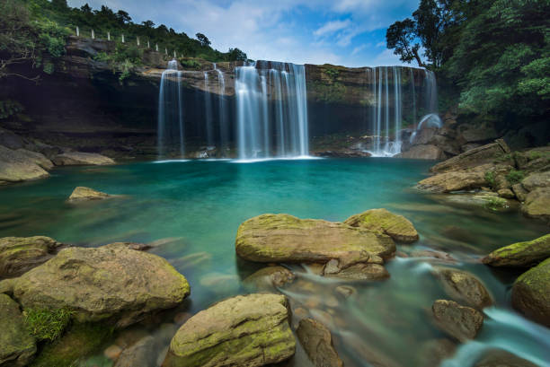
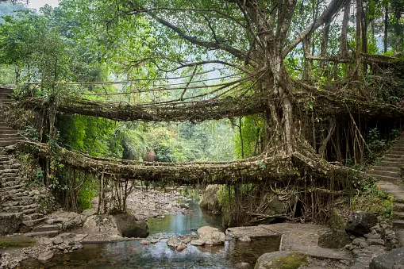
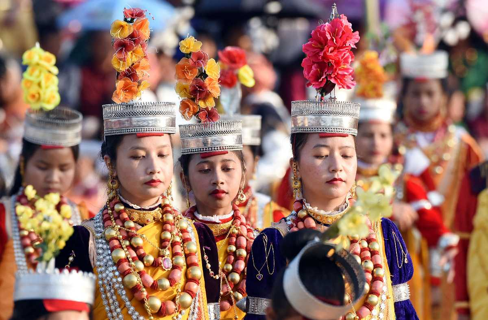
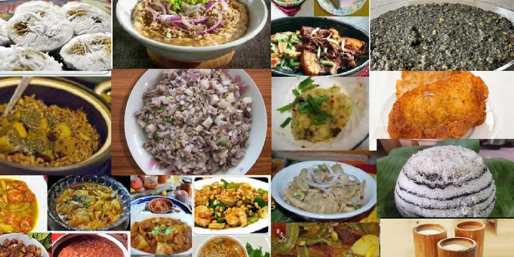

| ✧ Aspect | Information |
|---|---|
| ✧ Capital | Shillong |
| ✧ Chief Minister | Conrad Sangma |
| ✧ Largest City | Shillong |
| ✧ Districts | 11 |
| ✧ Official Language | Khasi |
| ✧ Other Language | Garo, English |
| ✧ Population | Approximately 3 million |
| ✧ Area | 22,429 square kilometers |
| ✧ Major Rivers | Umngot, Simsang, Kynshi |
| ✧ Major Industries | Agriculture, Tourism, Handicrafts |
| ✧ Popular Places | Cherrapunji, Mawsynram, Dawki, Shillong Peak |
The traditional Dresses in Meghalaya for men includes a jainsem, while for women, it's a jainkyrmen. These traditional dresses hold significant cultural value among the indigenous tribes of Meghalaya.
Meghalaya, known as the "abode of clouds," is a state in northeastern India with a rich historical and cultural heritage. The region has been inhabited by various indigenous tribes for centuries, contributing to its diverse cultural tapestry.
The early history of Meghalaya is characterized by the presence of tribal communities such as the Khasis, Garos, and Jaintias, who have distinct languages, traditions, and customs. These tribes have a strong connection with the land and have preserved their cultural identity over generations.
Meghalaya was once part of the ancient kingdoms of Kamarupa and later the Ahom Kingdom. However, it was during the British colonial rule that Meghalaya came under the influence of Western culture and administration.
After India gained independence, the region witnessed movements for autonomy and self-governance led by various tribal organizations. As a result, Meghalaya was formed as an autonomous state within the Indian Union in 1972.
Today, Meghalaya is known for its breathtaking natural beauty, including lush green hills, cascading waterfalls, and unique limestone caves. The state's vibrant culture, traditional music, and festivals attract tourists from around the world, making it a truly enchanting destination.



